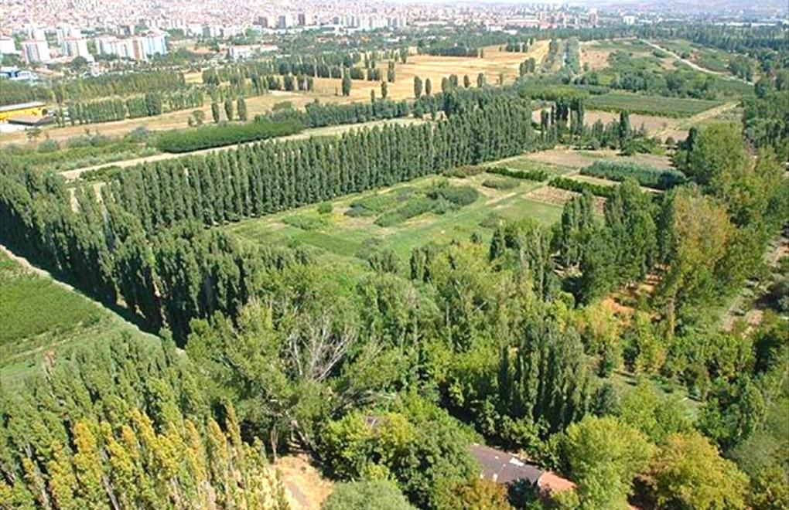
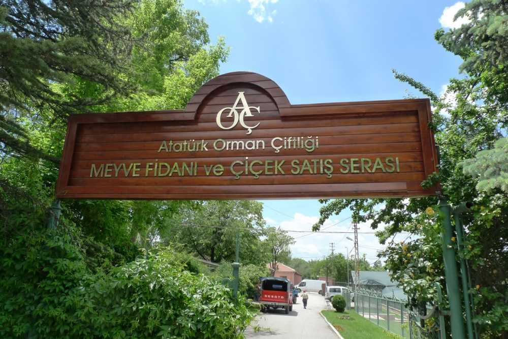
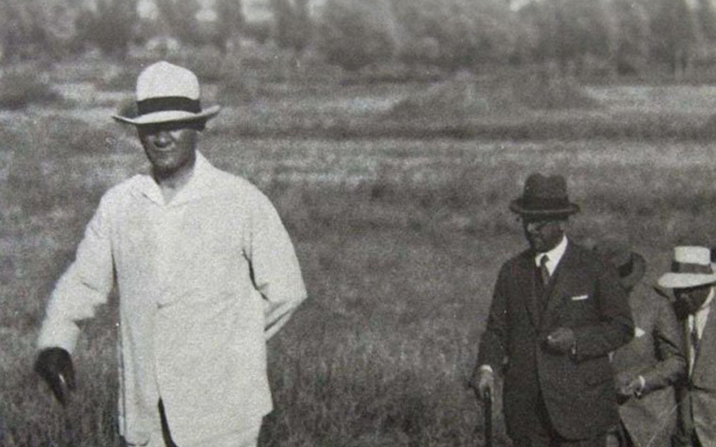

Atatürk Orman Çiftliği (AOÇ), Türkiye'nin başkenti Ankara'da, doğal güzellikleri ve zengin yeşil alanlarıyla ünlü olan önemli bir çiftlik ve rekreasyon merkezidir. AOÇ, Türkiye Cumhuriyeti'nin kurucusu ve ilk Cumhurbaşkanı Mustafa Kemal Atatürk'ün özel bir projesi olarak ortaya çıkmıştır. Cumhuriyet döneminin en önemli projelerinden biri olan AOÇ, Türkiye'nin milli serveti olarak kabul edilir ve ülkenin tarım ve hayvancılık sektörlerinin gelişimine katkıda bulunmuştur.
AOÇ'nin kökleri, 1920'li yılların başına dayanır. Türkiye'nin kurtuluş savaşının ardından, Mustafa Kemal Atatürk, ülkenin ekonomisini güçlendirmek ve çiftçiliği geliştirmek amacıyla modern tarım tekniklerini kullanmayı hedeflemişti. AOÇ, bu hedeflere ulaşmak için geniş bir arazi üzerine kuruldu ve tarımsal deneylerin yapıldığı bir merkez haline getirildi.
AOÇ, toplamda 4.500 hektarlık bir arazi üzerine yayılmaktadır. Bu alanın büyük bir kısmı ormanlık alanlarla kaplıdır ve çiftlik içinde yer alan yapılar ve tesislerle birlikte doğal bir güzellik sunar. Çiftlikte, at çiftliği, hayvanat bahçesi, piknik alanları, restoranlar, göletler, yürüyüş parkurları, bisiklet yolları, çocuk parkları, spor tesisleri gibi birçok aktivite ve tesis bulunmaktadır.
At çiftliği, AOÇ'nin en tanınmış yapılarından biridir. Türk atlarının yetiştirildiği, eğitim gördüğü ve yarışmalara hazırlandığı bir merkezdir. Burada Türk atçılığına ve at yetiştiriciliğine dair çalışmalar yürütülür. Ayrıca AOÇ içinde yer alan hayvanat bahçesi, dünya genelinde nadir ve özgün hayvan türlerine ev sahipliği yapar ve ziyaretçilere eşsiz bir deneyim sunar.
AOÇ, sadece doğal güzellikleri ve eğlence alanlarıyla değil, aynı zamanda tarihi bir öneme de sahiptir. Çiftlik, Ankara'nın yakın tarihine tanıklık etmiş ve birçok önemli olaya ev sahipliği yapmıştır. İkinci Dünya Savaşı sırasında, Türkiye'nin müttefiki olan İngiltere, AOÇ'daki tren istasyonunu kullanarak askeri malzemelerini taşımıştır. Ayrıca, AOÇ, ünlü Türk sanatçıların ve müzisyenlerin konserlere ev sahipliği yaptığı bir mekan olmuştur.
AOÇ, Ankara'nın en popüler rekreasyon merkezlerinden biridir ve yerli halkın yanı sıra turistlerin de ilgisini çeken bir noktadır. Çiftlik, yeşil alanları, doğal göletleri, piknik alanları ve yürüyüş parkurlarıyla ziyaretçilere doğa ile iç içe bir deneyim sunar. Aynı zamanda çeşitli spor tesisleri, restoranlar ve kafeler, ziyaretçilerin rahatlamasını ve keyifli vakit geçirmesini sağlar.
Atatürk Orman Çiftliği, Türkiye'nin tarihi ve kültürel miraslarından biridir. Cumhuriyet döneminin önemli bir sembolü olan AOÇ, ziyaretçilere doğa, tarım, hayvancılık ve rekreasyon alanlarında zengin bir deneyim sunar. Ayrıca çiftlik, Atatürk'ün Türkiye'nin ekonomik ve tarımsal gelişimine verdiği önemi ve çiftçilik sektörünün modernleşmesine olan katkısını hatırlatır.